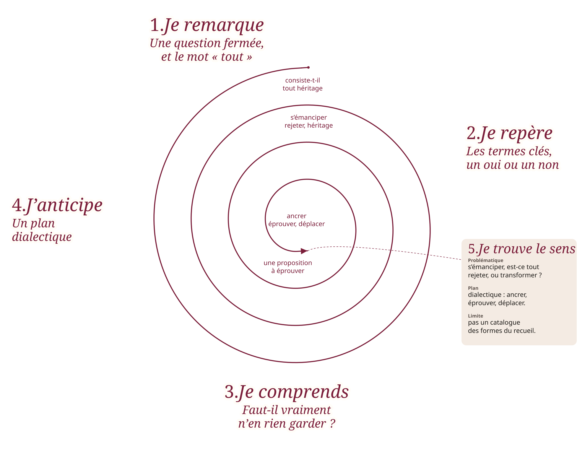

Lettres · Première · Lycée général et technologique
Dissertation et essai : les épreuves du bac en marche
Huit séances pour apprendre à prendre position, éprouver une réponse, et la déplacer. Dissertation pour la voie générale, contraction et essai pour la voie technologique.
Épreuve anticipée de français, écrit de 4 heures. La séquence prépare la dissertation, pour la voie générale, et la contraction suivie de l’essai, pour la voie technologique. Elle s’appuie notamment sur Rimbaud, Cahier de Douai, et sur La Boétie, Discours de la servitude volontaire, au programme 2026-2027.

Présentation
Huit séances de 55 minutes, prévues sur 52, mènent à l’épreuve écrite de 4 heures. La dissertation et l’essai y sont travaillés comme des démarches d’enquête : chaque argument doit modifier, préciser ou approfondir la réponse.
Trois mouvements d’un raisonnement :
- Ancrer : établir une première réponse solide.
- Éprouver : examiner les limites de cette réponse.
- Déplacer : découvrir la distinction ou la perspective qui permet d’aller plus loin.
Pour la voie générale, la dissertation part d’une question littéraire sur une œuvre et son parcours. Pour la voie technologique, la contraction d’un texte d’idées est suivie d’un essai. Les copies modèles sont des exemples pour inspirer, non des textes à apprendre par cœur.
Les trois mouvements conviennent lorsqu’il faut discuter une proposition. Tous les sujets ne le demandent pas. On commence donc par lire la question.
Plan thématique ou plan dialectique : comment le savoir dès la question ?
Avant d’écrire, il faut entendre ce que la question demande vraiment. Le plan ne se choisit pas par habitude. Il se lit dans les mots du sujet.
Deux familles de sujets
Le plan dialectique discute une proposition, en mesure la justesse, puis en déplace les limites. On y retrouve les trois mouvements déjà nommés : ancrer, éprouver, déplacer.
Le plan thématique, et son proche parent le plan analytique, éclairent des aspects, des formes, une construction. Ils n’opposent pas d’abord un oui et un non.
Ce que la formulation fait déjà voir
Indices fréquents d’un plan dialectique :
- Question fermée, oui ou non
- Pensez-vous que
- Faut-il, peut-on, doit-on
- Dans quelle mesure, jusqu’où
- Une citation à discuter
Indices fréquents d’un plan thématique ou analytique :
- Question ouverte
- Comment
- Quelles formes, quels enjeux
- De quelle manière
- En quoi, souvent
Deux pièges fréquents.
En quoi peut cacher une discussion. Si la phrase porte un jugement ou une affirmation à éprouver (« En quoi peut-on dire que la servitude est volontaire ? »), le sujet n’attend pas un catalogue de thèmes. Il attend que l’on discute la proposition.
Dans quelle mesure n’appelle pas un oui, puis un non. Il invite à nuancer : jusqu’où la proposition est juste, et où elle cesse de l’être.
Pour comparer
| Plan dialectique | Plan thématique ou analytique | |
|---|---|---|
| Ce que la question demande | Jusqu’où une proposition est-elle juste ? | Quelles dimensions, quelles formes, comment un phénomène se construit-il ? |
| Indices fréquents | Oui ou non, « Pensez-vous que », « Dans quelle mesure », une citation à discuter | « Comment », « Quelles formes », « Quels enjeux », souvent « En quoi » |
| Mouvement du devoir | Ancrer, éprouver, déplacer | Organiser des aspects complémentaires, ou suivre une construction et ses effets |
| Écueil | Transformer le devoir en oui puis non, ou conclure trop tôt par un compromis | Plaquer un plan dialectique sur une question qui n’en demande pas, ou aligner un catalogue sans enjeu |
Plusieurs sujets dialectiques
Œuvres au programme 2026-2027. Ce sont des propositions pédagogiques, non des sujets officiels. Pour chacun : les indices dans la question, puis une esquisse de plan.
-
Dialectique
« Dans le Cahier de Douai, s’émanciper consiste-t-il à rejeter tout héritage ? »
Indices. Question fermée (« consiste-t-il »). Le mot « tout » radicalise une proposition à éprouver.
Esquisse. I. Ancrer : le recueil multiplie les gestes de rupture. II. Éprouver : Rimbaud hérite pourtant de formes, de figures, d’une langue poétique. III. Déplacer : s’émanciper, ici, c’est transformer ce que l’on reçoit, non tout effacer.
-
Dialectique
« Dans quelle mesure le Discours de la servitude volontaire de La Boétie montre-t-il que la liberté se défend d’abord par le refus d’obéir ? »
Indices. « Dans quelle mesure » invite à nuancer, non à trancher par un simple oui.
Esquisse. I. Ancrer : la servitude tient au consentement ; le refus d’obéir est déjà un acte de liberté. II. Éprouver : refuser ne suffit pas toujours à « entretenir » la liberté. III. Déplacer : défendre la liberté, c’est aussi en prendre soin, pas seulement s’opposer.
-
Dialectique
« Pensez-vous que, dans Le Menteur de Corneille, le mensonge soit seulement un ressort comique ? »
Indices. « Pensez-vous que » demande une prise de position. « Seulement » restreint le jugement et appelle un examen de ses limites.
Esquisse. I. Ancrer : le mensonge fait rire, il nourrit la comédie. II. Éprouver : il met aussi en jeu l’identité, le désir, le crédit de la parole. III. Déplacer : le mensonge est un ressort comique, et un révélateur des relations.
-
Dialectique
« Faut-il voir dans les Entretiens sur la pluralité des mondes de Fontenelle une simple leçon de science ? »
Indices. « Faut-il » ouvre un débat. « Simple » porte un jugement à discuter.
Esquisse. I. Ancrer : l’ouvrage transmet des savoirs, avec clarté. II. Éprouver : le dialogue, le badinage, l’adresse à la Marquise déplacent la leçon. III. Déplacer : la science s’y donne comme un goût à partager, non comme un cours seulement.
-
Dialectique
« « C’est un extrême malheur d’être sujet à un maître. » Dans quelle mesure cette affirmation de La Boétie éclaire-t-elle le Discours de la servitude volontaire ? »
Indices. Une citation à discuter, puis « Dans quelle mesure ».
Esquisse. I. Ancrer : un maître suffit déjà à faire le malheur, même avant la tyrannie. II. Éprouver : le texte insiste moins sur le maître seul que sur le consentement de beaucoup. III. Déplacer : le malheur vient aussi de la servitude que l’on entretient.
Plusieurs sujets thématiques ou analytiques
-
Thématique
« Quelles formes prend l’émancipation dans le Cahier de Douai ? »
Indices. « Quelles formes » ouvre une enquête. Pas de oui ou de non préalable.
Esquisse. I. L’émancipation du voyage et du dénuement. II. L’émancipation des formes poétiques. III. L’émancipation du regard, de la sensation, de l’image de soi.
-
Analytique
« Comment le voyage devient-il une expérience de création dans le Cahier de Douai ? »
Indices. « Comment » demande de suivre une construction et ses effets.
Esquisse. I. Le départ et la route comme rupture. II. Les sensations du chemin qui deviennent matière poétique. III. Une voix qui se crée en marchant.
-
Thématique
« De quelle manière On ne badine pas avec l’amour de Musset fait-il jouer le cœur et la parole ? »
Indices. « De quelle manière » interroge des procédés, non une thèse à défendre ou à recuser.
Esquisse. I. Les jeux de la parole : badinage, défi, quiproquo. II. Les mouvements du cœur qu’ils révèlent ou déguisent. III. Le moment où le jeu cesse d’être un jeu.
-
Thématique
« Quels enjeux la parole de Zilia, dans les Lettres d’une Péruvienne de Graffigny, donne-t-elle à la découverte d’un nouvel univers ? »
Indices. « Quels enjeux » demande des dimensions complémentaires.
Esquisse. I. Découvrir un monde, c’est aussi en éprouver la violence. II. La lettre construit une voix et un regard. III. Un nouvel univers devient un lieu d’où juger le nôtre.
-
Thématique
« En quoi Pluie et vent sur Télumée Miracle de Simone Schwarz-Bart tisse-t-il les mémoires pour habiter le monde ? »
Indices. « En quoi » oriente vers des aspects. Le parcours donne l’enjeu. Il faudra veiller à ne pas en faire un simple catalogue.
Esquisse. I. Tisser les voix et les mémoires d’une lignée. II. Habiter une terre, une langue, une épreuve. III. Faire de la mémoire une manière d’être au monde.
Un « en quoi » qui n’est pas thématique. « En quoi peut-on dire, à propos du Discours de la servitude volontaire, que le peuple est l’auteur de sa propre servitude ? » L’ouverture « en quoi » semble thématique, mais « peut-on dire que » porte un jugement. Le plan est dialectique : ancrer le consentement qui fait la servitude, éprouver ce que cette formule a de trop absolu, déplacer vers une liberté qu’il faut aussi entretenir.
Lire le sujet avec la spirale de Gorse
Méthode conçue par Madame Carole Paoli Pompougnac. On part toujours de ce qui saute aux yeux, puis chaque tour s’enfonce vers ce qui est moins visible, jusqu’à « Je trouve le sens ».

- 1
Je remarque. Ce qui saute aux yeux dans le sujet : un mot fort, une tournure, une citation.
- 2
Je repère. Les termes clés, et le type de question : fermée ou ouverte, jugement ou enquête.
- 3
Je comprends. Ce que la question demande vraiment, au-delà de la première impression.
- 4
J’anticipe. Le type de plan : thématique, analytique, ou dialectique.
- 5
Je trouve le sens. La problématique, et l’esquisse du plan. C’est la pointe.
À chaque tour, l’idée s’écrit à l’extérieur, et à l’intérieur ce qui la soutient. Si un mot du sujet résiste à votre idée, revenez en arrière et reformulez.
Un sujet dialectique, lu pas à pas
Sujet. « Dans le Cahier de Douai, s’émanciper consiste-t-il à rejeter tout héritage ? »

- 1
Je remarque. Une question fermée, et le mot « tout », qui saute aux yeux.
- 2
Je repère. Les termes « s’émanciper », « rejeter », « héritage ». On pourrait d’abord répondre par oui ou par non.
- 3
Je comprends. Le sujet demande si l’émancipation exige de n’en rien garder, pas seulement si l’on peut rompre.
- 4
J’anticipe. Un plan dialectique : ancrer, éprouver, déplacer.
- 5
Je trouve le sens. Problématique : s’émanciper, est-ce tout rejeter, ou transformer ? Plan : I. la rupture est réelle dans le recueil ; II. l’héritage poétique demeure ; III. l’émancipation se joue dans une transformation, non dans un effacement total.
Un sujet thématique, lu pas à pas
Sujet. « Quelles formes prend l’émancipation dans le Cahier de Douai ? »
- 1
Je remarque. « Quelles formes » ouvre la question. Rien n’y demande un verdict.
- 2
Je repère. Les termes « formes » et « émancipation ». La question est ouverte.
- 3
Je comprends. On demande des dimensions, des figures de l’émancipation, pas de décider si Rimbaud est libre ou non.
- 4
J’anticipe. Un plan thématique, par aspects complémentaires.
- 5
Je trouve le sens. Problématique : sous quelles figures l’émancipation apparaît-elle dans le recueil ? Plan : I. le voyage et le dénuement ; II. les formes poétiques ; III. le regard et l’image de soi. Sans forcer un oui, puis un non.
Un exercice
Pour chacun de ces sujets, dites le type de plan, relevez l’indice qui vous guide, et proposez une esquisse en trois parties. Ce sont encore des propositions pédagogiques, sur des œuvres au programme 2026-2027.
- « Comment, dans La rage de l’expression de Ponge, le poème se cherche-t-il dans l’atelier de l’écriture ? »
- « Pensez-vous que le chevalier, dans Le Chevalier de la charrette de Chrétien de Troyes, n’agisse que par amour ? »
- « Quelles voies Mes forêts d’Hélène Dorion ouvre-t-elle entre la nature et l’intime ? »
- « En quoi peut-on affirmer que, dans Pour un oui ou pour un non de Sarraute, la dispute naît de presque rien ? »
Voir le corrigé
1. Analytique. « Comment » demande de suivre une construction et ses effets. Esquisse : I. l’atelier comme lieu d’un travail visible ; II. les reprises, ratures et tentatives qui font le poème ; III. le poème aboutit en montrant sa propre recherche.
2. Dialectique. « Pensez-vous que » et « n’agisse que » portent un jugement à éprouver. Esquisse : I. ancrer l’amour comme moteur de la quête ; II. éprouver ce que cette seule explication laisse de côté (honneur, prouesse, parole donnée) ; III. déplacer : l’amour invente aussi une conduite, il ne l’épuise pas à lui seul.
3. Thématique. « Quelles voies » ouvre une enquête sur des dimensions, sans oui ou non. Esquisse : I. la forêt comme paysage ; II. la forêt comme mémoire et langage ; III. la forêt comme espace de l’intime.
4. Dialectique, c’est un piège. « En quoi » semble thématique, mais « peut-on affirmer que » et « presque rien » portent un jugement. Esquisse : I. ancrer l’apparence d’un rien (un mot, un ton) ; II. éprouver la gravité réelle du conflit ; III. déplacer : la dispute naît de presque rien, et ce presque rien dit tout de la relation.
La même lecture du sujet vaut pour l’essai de la voie technologique, après la contraction, et, pour une large part, pour un essai en HLP ou en bac professionnel : on interroge d’abord les mots de la question, avant de choisir un plan.
La spirale de Gorse
Dans cette séquence, la spirale de Gorse oriente aussi le parcours des huit séances. Les premières boucles sont larges. À chaque tour, le tracé se resserre. Il s’achève par une pointe, non par un centre. Huit questions mènent ainsi à un problème que l’on peut enfin traiter. Pour lire un sujet dès la question, on revient aux cinq étapes ci-dessus.

À la pointe. À quelles conditions une prise de position permet-elle de penser et d’agir librement, plutôt que de remplacer une dépendance par une autre ?
Téléchargements
Quatre documents, chacun en PDF, Word et LibreOffice. Vous pouvez utiliser et adapter ces documents en citant leur autrice, sans usage commercial, et en partageant vos versions dans les mêmes conditions. CC BY-NC-SA 4.0.
-
Séquence (35 pages)
PDF Word (.docx) LibreOffice (.odt) -
Fiche professeur (3 pages)
PDF Word (.docx) LibreOffice (.odt) -
Fiche de correction (10 pages)
PDF Word (.docx) LibreOffice (.odt) -
Version dys (8 pages)
PDF Word (.docx) LibreOffice (.odt)
Pour l’oral, voir aussi L’oral du bac de français : présenter une œuvre et dialoguer.
Madame Carole Paoli Pompougnac
George Henry Adcock, d’après Robert William Buss, « Examination of the Students of the University of Durham », octobre 1842, bibliothèque Cosin, Durham, domaine public. Schéma de la spirale de Gorse : illustration originale, conçue par Madame Carole Paoli Pompougnac.